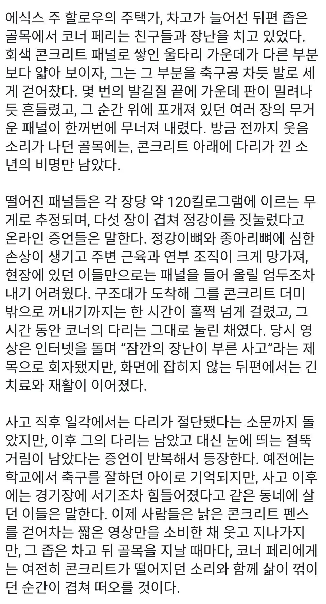

하..얼마나 후회 될까...
으아악
다리: 이러다 뒤진다고 주인아
병신
아니 어릴 때 짤로 본 거였는데 장당 120kg였다고? ㅁㅊ
합산이겠지
두 번째 문단에 장당 120이라고 쓰여있어서
본문을 안 읽나?
읽었는데 본문이 잘못됐을거같음 저게120킬로가 나갈수가없음
그렇다고 하기엔 겨우 총합 120kg를 친구들이 못 들어올리려나? 2명만 붙어도 어떻게든 조금씩 움직여서 다른 물건 끼울 수 있을텐데
옛날에 봤을 때에도 그냥 존나.아파보였
난 감정없는 싸이코패스라 그런가 별로?
눈치없는이 아니고?
본인이 싸패라고 말하는 애들중 99%는 싸패가 아니고 그냥 찐따임
템플릿 실패 ㅋㅋㅋ
붉은발의 제프
20년전에 짤만 돌아다니던 거였는데 썰이 추가되었네
ai로 글 써달라고 한거 아니냐
죽었으면 다윈상.. 인데
자업자득
무릎튼튼하노 ㅋ
폭력적인 xy들은 다 저런식으로 걸러져야 하는게 맞긴함. 미래를위해서라도
짤만 돌아다니던건데 사족은 AI로 만든듯
사족이 너무 cpu향 진하게 나는데?
초딩때본거같은데
중국이 아니었네